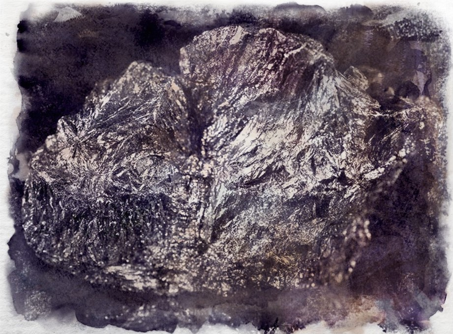

Graphite
Formed by heat and chemical changes deep underground, it is a black mineral that has a distinctive silvery sheen. Useful for marking livestock but more so for lining forge molds to cast smoother metal. Cannon balls are as such much more powerful due to their ability to be shot further.